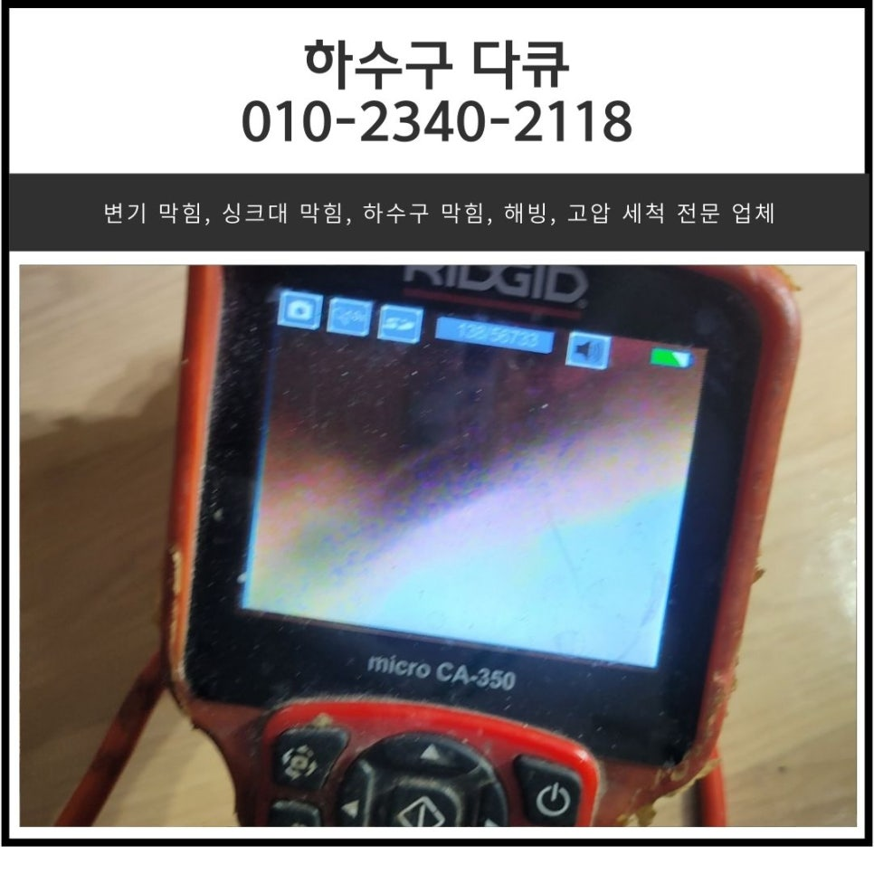
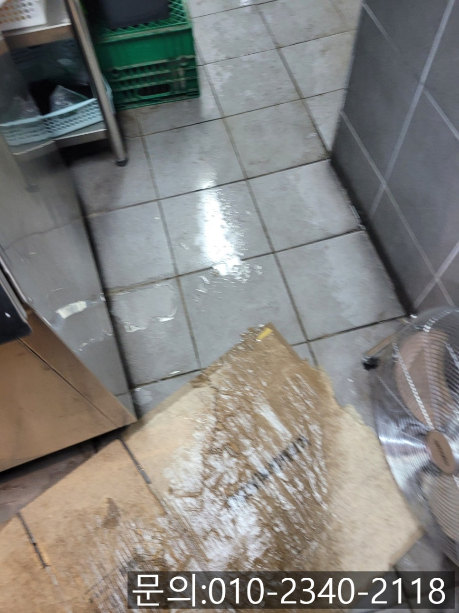
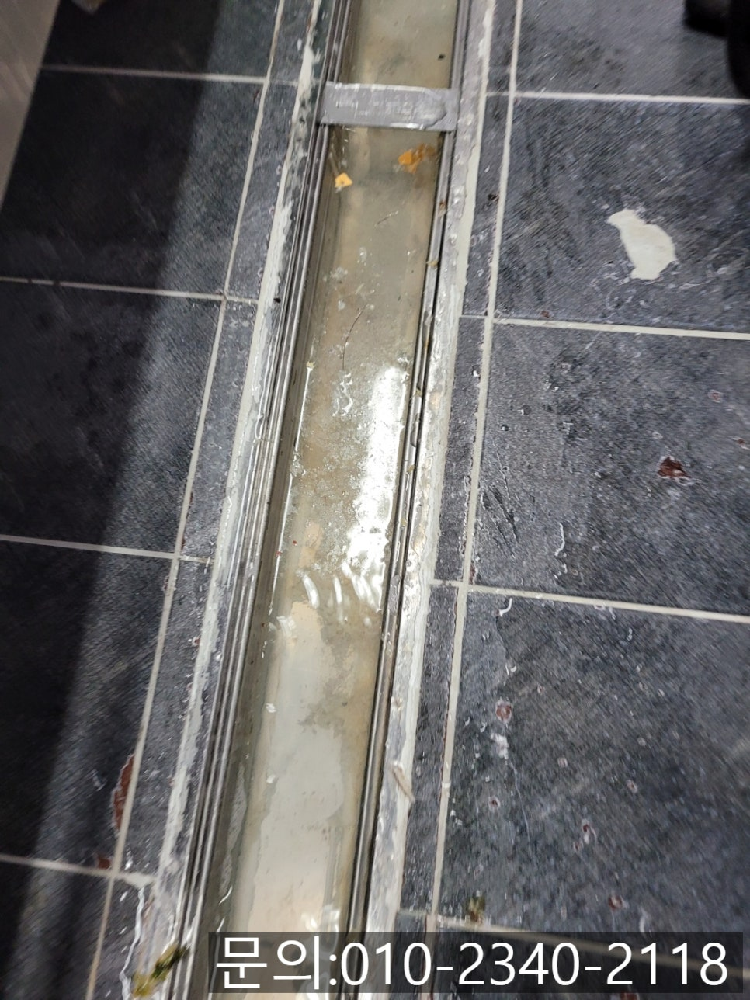
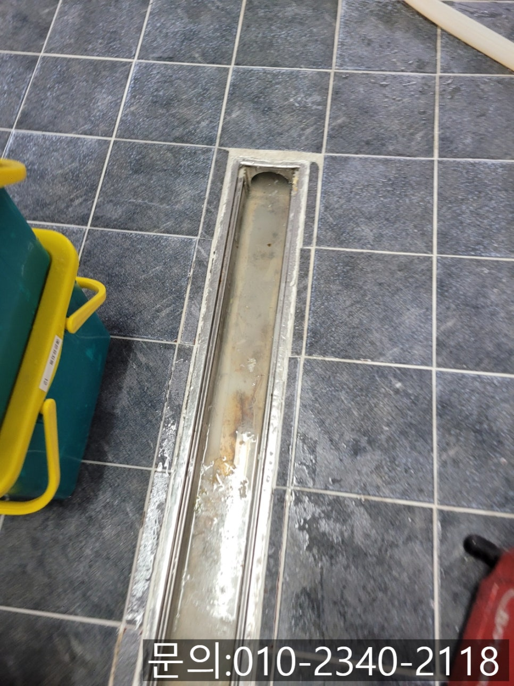
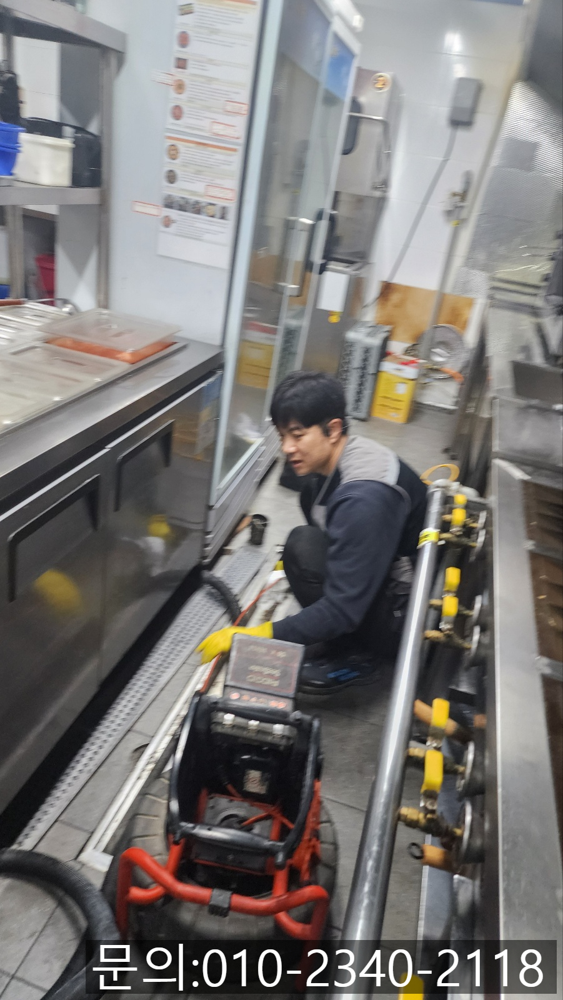
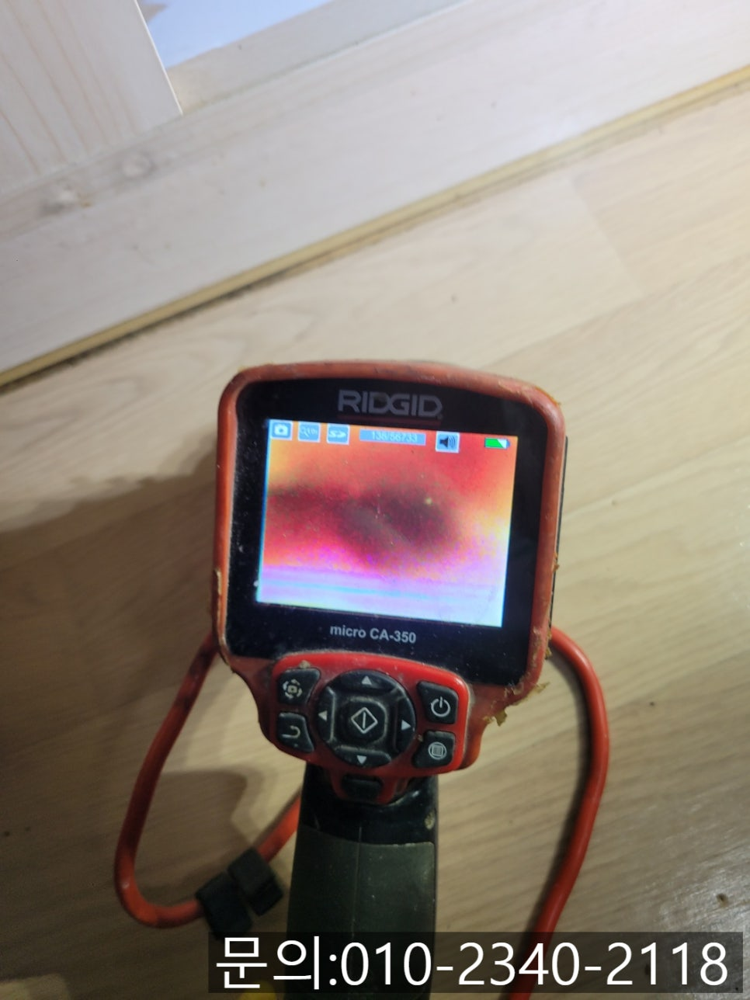
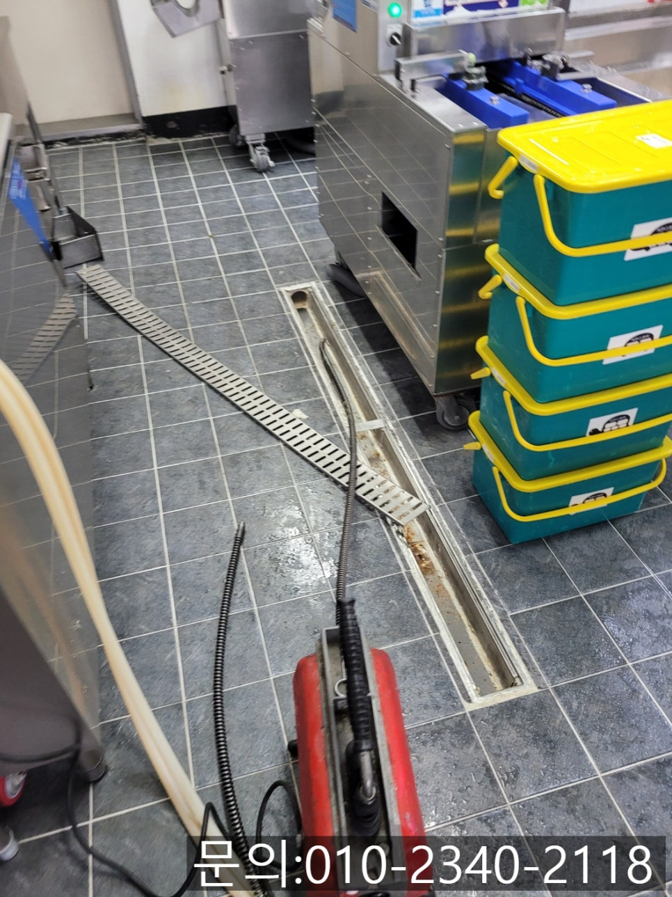

🏠 초월읍 식당 주방 바닥 막힘 곤지암읍 하수구 역류 뚫어주는 전문 업체
광주 하수구막힘 전문 시공 후기

📋 작업 개요
- 위치: 광주
- 서비스 유형: 하수구막힘, 배관막힘, 역류해결, 뚫는업체, 배관청소, 고압세척
- 작업 일시: 2025. 3. 23. 8:39
- 업체명: 하수구수사대 (010-5615-2118)
🔍 문제 상황
안녕하세요.
초월읍 식당 주방 바닥 막힘, 곤지암읍 하수구 역류 뚫어주는 전문 업체 하수구 다큐입니다.
초월읍 식당 주방 바닥 막힘은 매우 흔한 문제입니다.
하수구가 막히게 되면 식당에서 사용한 물이 제대로 빠지지 않아 위생적으로도 문제가 되고, 심한 경우 악취와 벌레도 생길 수 있어 정확한 원인을 찾아 해결해 줘야 합니다.
오늘은 식당 주방 바닥 하수구가 막히는 원인과 곤지암읍 하수구 뚫어주는 전문 업체 하수구 다큐가 해결하고 온 현장을 소개해 드릴게요.
초월읍 식당 주방 바닥 막힘의 가장 큰 원인은 첫 번째로 음식물 찌꺼기와 기름때입니다.

🔎 원인 분석
💡 전문가 진단: 정밀 진단 장비를 사용하여 슬러지의 고착 여부를 판명하고 타격/세척 작업을 실시했습니다.
주방에서 식기를 세척하는 과정에서 남은 음식물 찌꺼기가 하수구로 흘러들어가 쌓이면서 막힘이 발생하게 됩니다.
이때 흘러들어간 기름 성분은 물과 섞이지 않아 하수구 벽면에 들러붙고 쌓이게 되면서 점점 두꺼운 층을 형성해 배관을 막게 되는 거예요.
두 번째 원인으로는 비닐, 휴지 등의 이물질을 직원들이 실수로 버려 막히는 경우도 많습니다.
세 번째 원인으로는 배관의 노후로 인해 내부에 녹이 슬거나 이물질이 쌓이면서 배수가 원활하게 이루어지지 않는 경우입니다.
오늘은 경기도 광주에 위치한 식당 주방 바닥 트랜치 배관에서 물이 흘러가지 않는 현상으로 연락을 받고 다녀온 현장을 소개해 드릴게요.
한식 배달을 전문으로 하는 식당에서 주방이 역류로 인해 영업 준비를 못 하고 있다는 다급한 연락을 받았습니다.
식당의 핵심인 주방에 문제가 발생하게 되면 음식을 준비하지 못해 매출 하락으로 이어질 수 있다 보니 고객님께 가게 주소를 안내받고 신속하게 현장으로 달려갔어요.

🔧 작업 과정
필요한 장비들을 챙겨 주방으로 들어가 보니 고객님께서 말씀해 주신 것처럼 주방 바닥에 물이 역류하고 있는 상태였고, 트랜치 배관에도 사용한 물이 빠져나가지 못하고 고여있는 상태로 주방에서 물을 사용하지 못하는 상황이었습니다.
주방 바닥에 위치한 배관이 어떤 원인으로 인해 막힘이 발생했는지 알아보기 위해 내시경 카메라를 진입시켜 점검해 보기로 했어요.
내시경 카메라는 사람들이 건강검진할 때 내시경 검사를 하는 것과 같은 원리로 사람의 눈으로 직접 확인할 수 없는 배관의 내부를 촬영해 막힘의 원인을 파악해 주는 장비입니다.
내시경 카메라가 배관 내부로 진입하자 기름 슬러지와 기름 성분 등 오랜 시간 주방에서 흘러들어간 이물질로 인해 배관이 막혀있는 것을 확인할 수 있었어요.
고객님께 배관의 상태와 막힘의 원인 등 자세히 안내해 드린 다음 작업을 진행하기로 했습니다.
우선 통수 작업을 위해 전동 스프링을 이용하기로 했습니다.
전동 스프링으로 물구멍을 낸 다음 내시경 카메라로 다시 확인해 보니 생각보다 많은 양의 이물질이 배관을 막고 있는 상태로 전동 스프링 장비로는 해결이 어려웠습니다.
곤지암읍 하수구 역류 뚫어주는 전문 업체 하수구 다큐는 플렉스 샤프트 장비를 이용해 쌓여있는 이물질을 모두 제거해 주기로 했어요.
내시경 카메라로 이물질의 위치를 파악한 다음 플렉스 샤프트 장비를 사용해 내벽에 붙어있는 이물질을 제거하는 작업을 진행했어요.
플렉스 샤프트 장비는 얇은 노즐 끝에 체인이 달려있는데요.
본체에 전동드릴을 연결해 작동시키면 그 힘을 체인이 전달받아 360도로 회전하면서 이물질을 타격해 제거해 주게 됩니다.


✅ 작업 완료
워낙 많은 양의 이물질이 쌓여있다 보니 수차례 반복해 작업을 진행한 뒤에야 모든 이물질이 제거되고 깨끗해진 배관 내부를 확인할 수 있었습니다.
청소 작업을 마친 다음 주방에서 물을 사용해도 막힘이 나 역류가 발생하지 않는 것까지 테스트를 진행한 다음 마무리할 수 있었어요.
경기도 수원시 권선구 매송고색로533번길 7 상가동 B층 01호 298




⚠️ 하수구 배관 막힘 예방 및 관리 가이드
- ✅ 머리카락, 비닐, 물티슈 등 물에 분해되지 않는 이물질은 하수구 유입을 절대 금지해 주세요.
- ✅ 하수구 거름망을 씌우고 모여진 이물질은 주기적으로 쓰레기통에 바로 비워주셔야 합니다.
- ✅ 배관 노후가 심할 경우 이물질이 더 쉽게 걸리므로 주기적인 배관 세척(고압세척 등)을 권장합니다.
- ✅ 작업 후 1년 이내 재발 시 하수구수사대에서 무상 A/S 보증 서비스를 제공합니다.
💡 핵심 정리
- 확실한 장비 작업(내시경 점검 및 샤프트 스케일링)으로 원인을 뿌리 뽑습니다.
- 작업 후 1년 이내에 동일한 부위 재발 시 100% 무상 A/S 서비스를 보장합니다.
- 서울 · 경기 · 인천 전 지역에 24시간 언제든 긴급 출동할 수 있도록 항시 대기 중입니다.
❓ 자주 묻는 질문 (FAQ)
🚨 광주 하수구막힘 문제로 고민이신가요?
정확한 원인 진단과 확실한 시공으로 재발 없는 해결을 약속드립니다.
24시간 긴급 출동 | 서울 · 경기 · 인천 전지역 | 1년 내 재발 시 무상 A/S